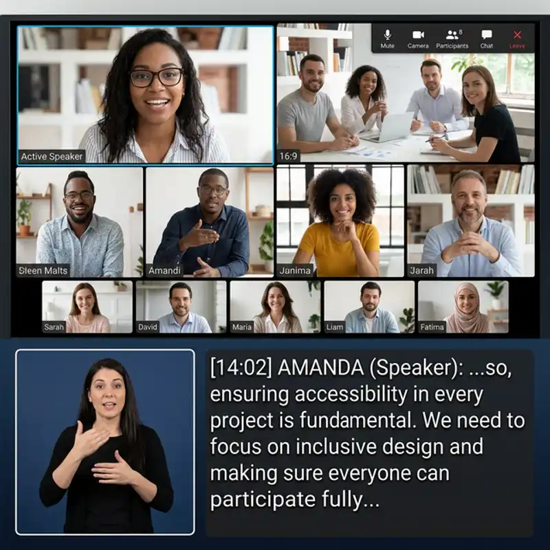
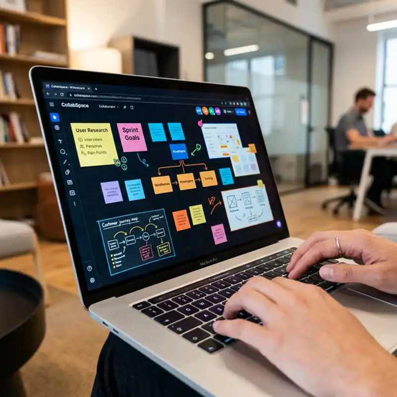
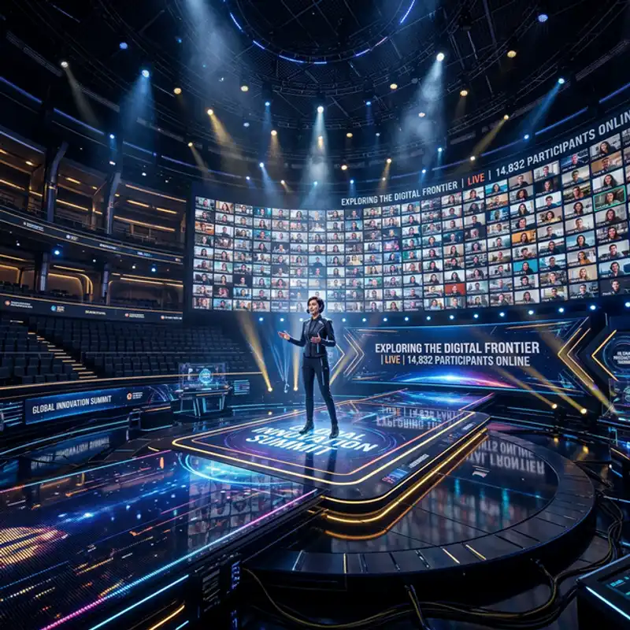
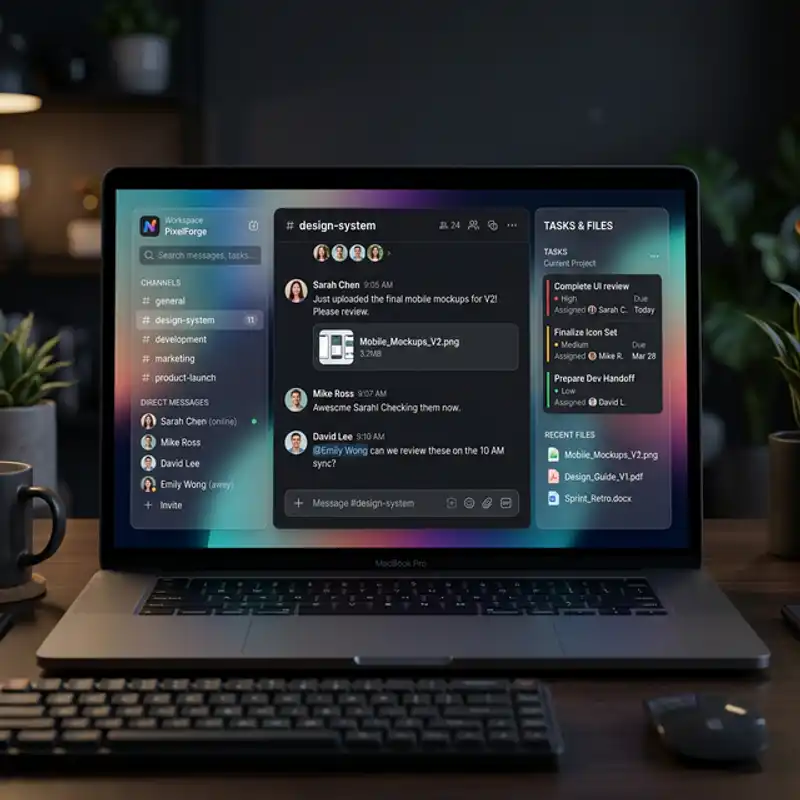

GUIDE
5 min read
Getting Started with Stackly
Complete walkthrough for setting up your professional workspace and hosting your first high-def meeting.
Read GuideGet the most out of Stackly with our latest guides, tutorials, and success stories.
Complete walkthrough for setting up your professional workspace and hosting your first high-def meeting.
Read Guide
Deep dive into our end-to-end encryption standards and HIPAA/GDPR compliance configurations.
Read Whitepaper
Learn advanced brainstorming techniques and Kanban workflows to boost your team's creative output.
Watch VideoHow GlobalTech transitioned 10k employees to a hybrid model using Stackly's presence features.
Read StoryBridging the gap between classroom and home with seamless LMS and Stackly Education API.
View Docs
Best practices for doctors and patients to ensure HIPAA-compliant remote consultations.
Read Guide
Technical architecture and stage-management tips for hosting massive digital summits.
Read Blueprint
Compatibility guide for cameras, microphones, and room systems for the ultimate Stackly experience.
Check CompatibilityConnecting factory floors and field experts with ruggedized mobile meeting solutions.
Read Guide
How government agencies maintain total control over sensitive meeting metadata and recordings.
Read Success StoryDeep dives into the science of collaboration and future workspace trends.
Frameworks for hosting high-impact brainstorming sessions in a hybrid environment.
Exploring the UI/UX principles behind our glass-morphism collaboration interface.
Technical architecture of handling 10k+ concurrent streams with zero latency.
Psychological studies on eye contact and spatial audio in digital workspaces.
Documentation on building custom integrations and bots for the Stackly grid.